Chữ "A" đậm của Amleth với thanh equalizer bên trong gợi nhạc. Chữ "A" trắng và các thanh màu tím (màu nhấn của app) nằm trên nền gradient từ indigo đậm sang gần đen, để icon hợp với giao diện tối.
Lớp trước và lớp nền tách riêng nên launcher có thể áp bất kỳ hình dạng nào. Vòng tròn nét đứt ở ví dụ cuối là vùng an toàn 66dp: giữ biểu tượng nằm trong đó.

Kiểm tra biểu tượng còn nhận ra được khi thu nhỏ.
| Tệp (design/assets) | Cách dùng |
|---|---|
| icon.svg / icon-1024.png | Bản gốc 1024×1024 tràn viền, không bo góc. Dùng cho trang ứng dụng trên Play Store (thu về 512×512) và làm nguồn cho icon Windows, Linux, web. Để hệ điều hành hoặc launcher tự bo góc. |
| icon-background.svg | Icon thích ứng của Android, lớp nền (khung 108dp). |
| icon-foreground.svg / icon-foreground-1024.png | Icon thích ứng của Android, lớp trước. Biểu tượng nằm trong vùng an toàn 66dp. |
| icon-monochrome.svg | Icon theo chủ đề của Android 13 trở lên. Một màu, hệ thống tự tô màu. |
| logo-mark.svg | Bản vuông bo góc để dùng trong app (màn hình đăng nhập, Giới thiệu, favicon web). |